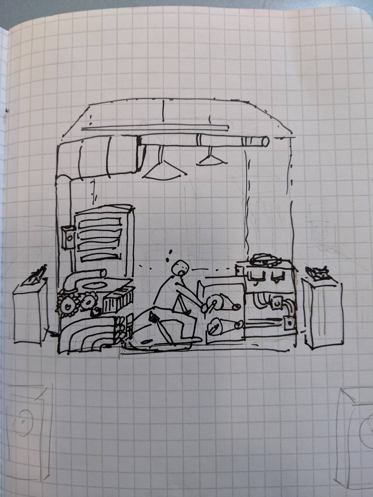
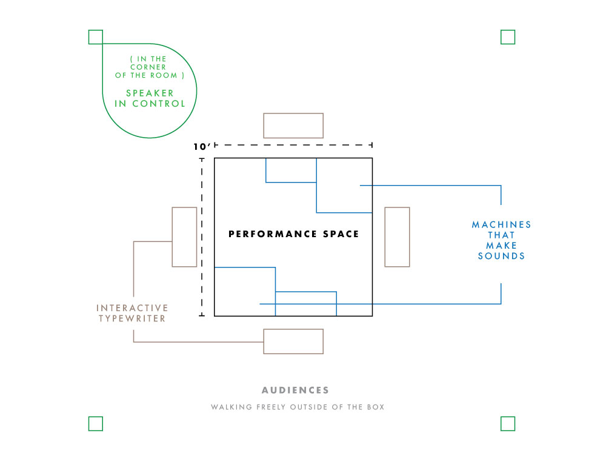
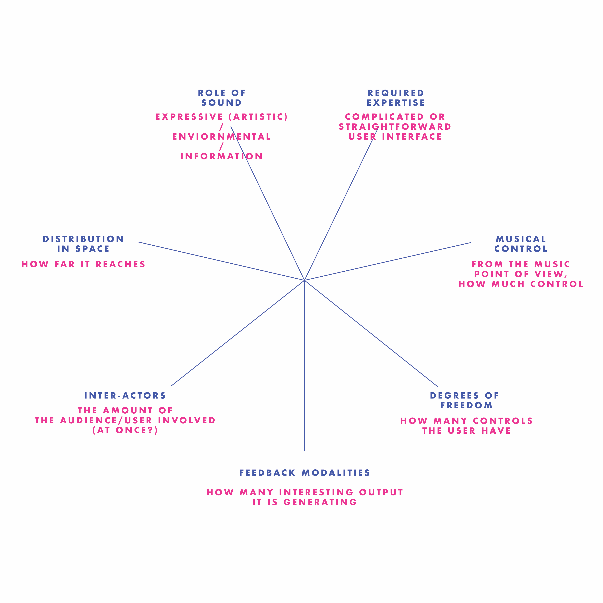
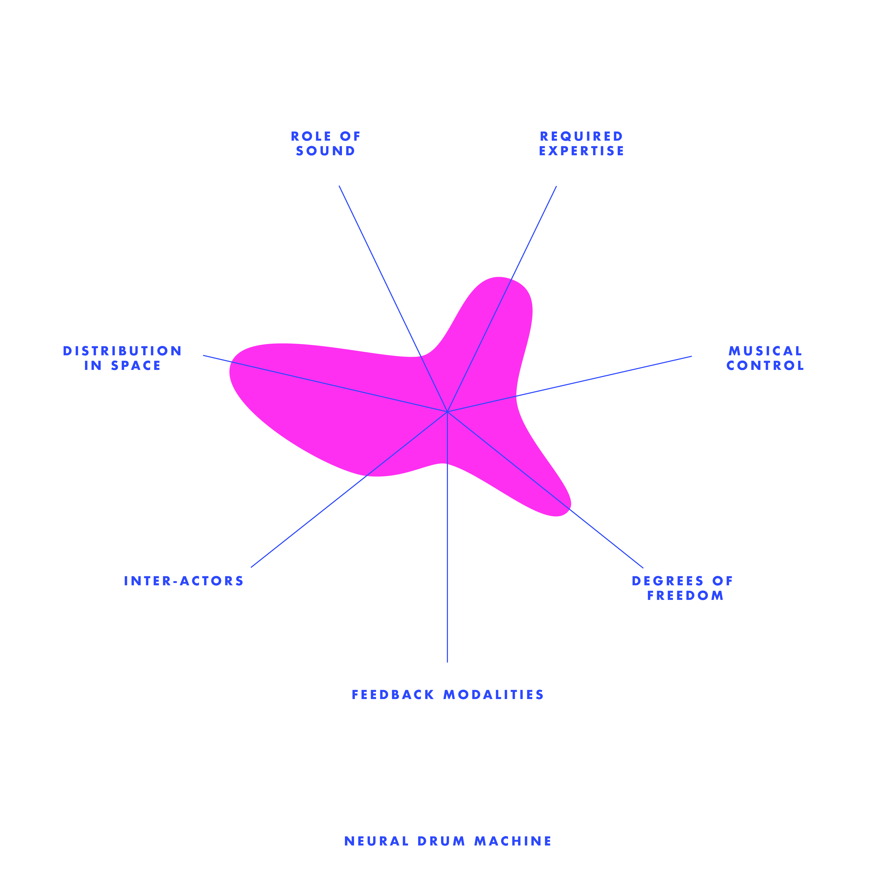
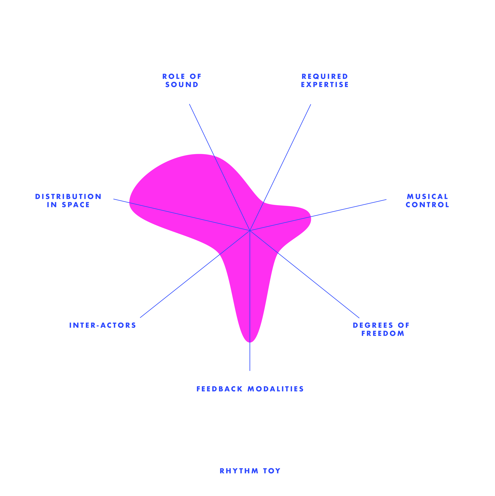
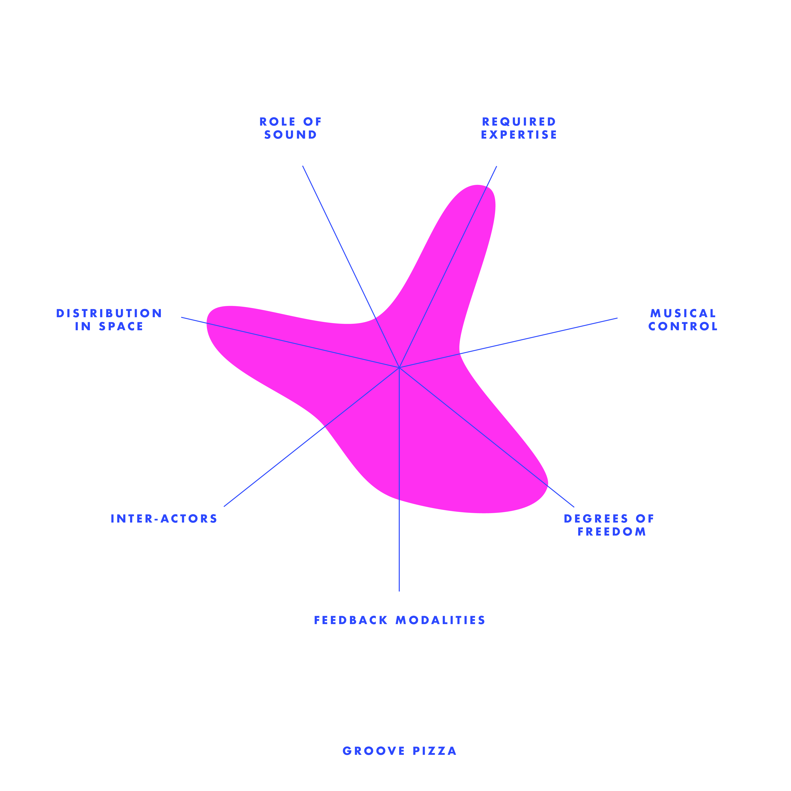
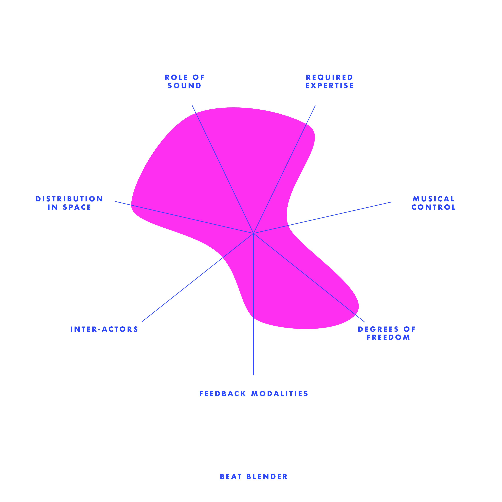

Week 1 - Anxiety of Machination (Concept)
In a room of crowd, people stopped to see this—a transparent cube with a man inside, who is standing in the middle of running machines, trying to stop the noises that the machines create. Outside of the cube there’s typewriters; that connects to the AI system that has a voice liabrary of on each side of the cube facing towards the audience—The Anxiety Of Machination is an interactive installation piece and performance tool inspired by the track “Intro” by the experimental hiphop group clipping.
This piece aims to explore the relationship between human and machine; the anxiety produced by their interaction and the power dynamics between them.
Installation Overview
The installation features a small space, roughly 10’ by 10’ square in the center of the stage or a gallery space.
The space is delineated with glass walls and is filled with industrial machinery - gears, floor levers, steam pipes, etc. The participant enters and can freely play with the machinery, adjusting the levers, spinning gears, and so on. The different pieces of machinery control different elements of sound, some primarily through the physical vibrations created by the machine pieces rubbing or clanking, but others may trigger changes to audio being played by a computer-controlled speaker system. The participant can control the tempo, abrasiveness of the background instrumental, internal rhythm of the computer-generated hip-hop vocal part, and can also choose to trigger the breakdown/self-destruct sequence which will end the piece. However, aside from this self-destruct mechanism there is no way for the participant to actually calm or slow the musical tension being built; like a runaway train the participant’s choices are limited to various stylistic adjustments within the larger narrative arc of rising tension followed by (destructive) release.


Week 2 - Analyze rhythm interfaces
I did four instead of two because I feel very uncertain on how to do this. I found myself constantly changing my standards as I moved on to the next interactive webpage. Below is a graph with my self understanding of each criteria:

Everthing will be high in "Distribution in Space" since they are all web-based interactive interfaces.
1.Neural Drum Machine

This is the first one that I interacted with. Personally, I like how simple and straight forward the interface is. The learning of this web was fast--only some simple clicking on the shapes, simple adjustment on each attributes, and clear looping animation. However, I do found the output is way too simple, which the only animation is sort of explanatory (showing you where the loop is going). You are only able to control one set of rhythm that goes in loop. I like the rhythm generated from this interface--it is clean, logical, easy to understand just like its interface, but lack of playfulness and diversity.
2.Rhythm Toy

I want to talk about this Rhythm Toy interface the next is because it also has a simple user controls, yet, lesser freedoms but higher output than the Neutral Drum Machine. The animation correspond with the beat you put in, which also provides a bit more diversity in timbral level (I'm not sure if it is corresponding with the diversity of instrument used), creates more fun than the previous one even though the music is still educational / a safe play.
3.Groove Pizza

The third one, I anaylsed is this Groove Pizza. I was attractived by the visual of this interface--very logically distributed (the pie graph like system, corresponding with the 7 coloum beat adjustor) at the same time very abstractive (how it has shapes on the left hand side--instead of creating music by the sound, but also how it can be visually related). Even though the visual output seemed very interesting, I didn't put it as a high output because the visuals were there already as an input, and nothing more that it produced that expected. Also, I feel the default setting of the tempo was a little fast. I found it difficult to use when was trying to adjust the beats while playing. I think it is always good to have a rather slower default, have the user get familliar with the system first and then they can adjust it themselfs.
4.Beat Blender

Last but not least, the Beat Blender. This is a very interesting interface than sort of hide the magic of music behind the four-color-gradient. Each corner has one loop of beat, and at the sections that the colors mixed together, the beat also sort of mixed--this compare to the rest of the interfaces is a more experimental project, specially from the music standards--when the user has been given more freedom. Eventhough I found it was pretty complicated when you try to adjust the beat of each corner (it gives a lot of default beat options), you don't need to adjust and you will still found intriguing beacuse of the "Drag / Draw" at the left bottom corner. It is definitly a very new way to combine loops together. it almost looks very random, but each loop are somehow related to each other because they are in 'gradient'.